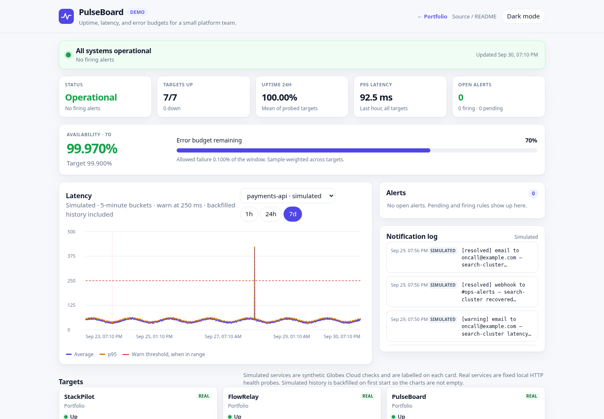
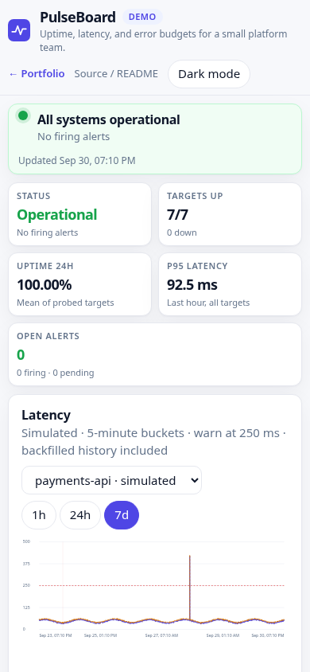

PulseBoard
Uptime, latency, and error-budget dashboard for a small platform team. PulseBoard probes a fixed catalog, keeps a week of samples in SQLite, and runs a small alert state machine with a simulated notification log.
The live view is a single self-contained page (no CDN fonts, charts, or trackers). Charts are drawn as inline SVG.
Overview
Globex Cloud, a fictional company in this demo, wants the same answers a status page and a tiny Grafana give a larger team: what is up, how slow it is, how much error budget is left, and which incidents are open. PulseBoard is that view, small enough to run on one VPS process.
Four targets are simulated and labelled in the UI (payments-api, eu-edge-cdn, auth-service, search-cluster). Their latency follows a seeded daily pattern plus a fixed weekly incident script, so the same timestamp always produces the same sample. Six targets are real HTTP checks against local health endpoints and are never invented:
- StackPilot
http://127.0.0.1:18801/healthz - FlowRelay
http://127.0.0.1:18802/healthz - PulseBoard
http://127.0.0.1:18803/healthz - SiteAtlas
http://127.0.0.1:18806/healthz - SkyForge
http://127.0.0.1:18807/healthz - LedgerLite
http://127.0.0.1:18809/healthz
If a real target is down, the card shows DOWN. That is expected when the sibling demo is not running.
Backfill. On first start, simulated targets receive 7 days of history at a 60-second step. Those rows are stored with backfilled=1. They are synthetic, not archived probe results. Real targets are not backfilled. After that, the prober runs every 30 seconds and only inserts new samples. Restarting does not backfill again.
Problem → Solution → Result
Problem
- A handful of services had no single place to see uptime, latency, and remaining error budget.
- Alert noise and a missing incident history made it hard to tell a blip from an outage.
- A full Prometheus stack is more machinery than a small team wants on day one.
Solution
- A fixed-target prober (real HTTP checks plus clearly labelled simulated services) writes samples to SQLite.
- Built-in rules move alerts from pending to firing to resolved, and record incidents plus a simulated notification log.
/metricsplus the files inops/show the same signals in Prometheus, Alertmanager, and Grafana when the team outgrows the built-in page.
Result
- The demo opens on a populated 7-day status bar, a latency chart, and an incident timeline.
- Down, latency, and SLO-burn rules are visible as pending, firing, and resolved, with durations.
- A Prometheus scrape config, alert rules, and a Grafana dashboard JSON ship with the project.
These are demo capabilities, not claims about a production client.
Features
- 30-second probe loop. URLs come only from
config/targets.yml. The API cannot add targets. - SQLite samples (
ts,ok,status_code,latency_ms,error) with a 7-day retention cap. - 5-minute buckets for 24h and 7d charts; 1-minute buckets for the 1h chart.
- Rules: down for 2 consecutive checks (critical); p95 over the target threshold for the 5-minute window, confirmed on the next check (warning); 1-hour availability under 99.5% (warning).
- SLO widget: 7-day availability against a 99.9% target, plus error budget remaining.
- Read API, Prometheus text exposition, and a 15-second dashboard refresh.
- Request body cap (8 KB) and a per-IP limit on non-GET methods. There is no public write API.
Architecture
config/targets.yml
|
v
probe loop (30s) ---- real HTTP GET /healthz (fixed URLs only)
| simulated seeded series (Globex Cloud)
v
SQLite samples, alerts, incidents, notifications
| retention: 7 days, notification cap
+--> read API --> dashboard (vanilla JS, inline SVG)
+--> /metrics --> Prometheus --> Alertmanager / Grafanaflowchart LR
cfg["config/targets.yml"] --> loop["Probe loop"]
loop --> http["Real health checks"]
loop --> sim["Simulated series"]
loop --> db["SQLite"]
db --> api["FastAPI read API"]
api --> ui["Dashboard"]
api --> prom["/metrics"]
prom --> graf["Prometheus and Grafana"]The prober and the backfill call the same sample_point function, so live dots and history agree. Alert evaluation runs after each sample. A firing alert opens an incident and appends lines such as webhook to #ops-alerts and email to oncall@example.com. Those deliveries are simulated; nothing is sent.
From PulseBoard to Prometheus, Alertmanager, and Grafana
The built-in engine is enough for one team and one process. The same ideas map onto a standard stack:
| PulseBoard | Larger stack |
|---|---|
probe_success gauge | Prometheus scrape of GET /metrics (ops/prometheus.yml) |
probe_latency_seconds histogram (last 5 minutes) | histogram_quantile in Grafana |
probe_latency_threshold_seconds | Per-target threshold the latency rule compares against |
alerts_firing{severity=...} | Grafana stat, or Alertmanager routing |
| Down / p95 / 1h SLO rules | ops/alert.rules.yml (TargetDown, TargetLatencyP95High, SLOBurn) |
| Dashboard | ops/grafana-dashboard.json (import, pick a Prometheus datasource) |
Load the rule file into Prometheus and point Alertmanager at the receivers you actually use. PulseBoard's own notification log stays a demo of the message shape (#ops-alerts, oncall@example.com) and does not call a webhook.
The built-in latency rule treats 5 minutes as the p95 window and confirms on the following probe (about 30 seconds) so a single slow sample stays pending. The Prometheus example uses for: 5m on the 5-minute quantile, which is the usual way to express that same intent in Alertmanager.
Tech stack
- Python 3.9+ (developed to run on 3.9 and 3.11)
- FastAPI 0.115 and Uvicorn 0.30
- SQLite via the standard library
- PyYAML for the fixed catalog
- Vanilla HTML, CSS, and JavaScript
Run locally
cd pulseboard
python3 -m venv .venv
.venv/bin/pip install -r requirements.txt
./run.shOpen http://127.0.0.1:18803/. run.sh creates the venv if needed and listens on 127.0.0.1:18803.
Install requirements-dev.txt before running tests.
Docker Compose
Docker is optional. The image runs as a non-root user and health-checks /healthz.
docker compose up --buildThe service listens on port 18803. A named volume stores SQLite. If the volume is not writable by uid 10001, point DATA_DIR at a directory that is.
Configuration
| Variable | Default | Purpose |
|---|---|---|
PORT | 18803 | HTTP port |
HOST | 127.0.0.1 | Bind address. Compose sets 0.0.0.0. |
DATA_DIR | ./data | SQLite directory |
PULSEBOARD_CONFIG | config/targets.yml | Catalog path |
PULSEBOARD_PROBER | 1 | Set 0 to disable the background loop |
PULSEBOARD_BACKFILL | 1 | Set 0 to skip simulated history |
Probe URLs, thresholds, SLO targets, and notification channel labels live in config/targets.yml. Simulated entries must not set a URL. Real entries must be http or https and must not carry credentials.
API endpoints
All UI calls are relative (api/..., static/...) so the app works at the process root and behind a prefix that nginx strips.
| Method | Path | Description | ||
|---|---|---|---|---|
| GET | / | Dashboard | ||
| GET | /healthz | {"status":"ok",...} with no database work | ||
| GET | /api/summary | Overall status, uptime, p95, SLO, open alerts | ||
| GET | /api/targets | Cards: status, uptime, percentiles, sparkline, 90-segment bar | ||
| GET | `/api/targets/{id}/series?range=1h\ | 24h\ | 7d` | Downsampled latency series |
| GET | /api/alerts | Pending and firing alerts | ||
| GET | /api/incidents | Last 20 incidents | ||
| GET | /api/notifications | Simulated notification log | ||
| GET | /metrics | Prometheus text exposition |
There is no write endpoint. Non-GET requests are rate limited (30 per minute per IP, using X-Real-IP when present) and bodies over 8 KB are rejected.
Tests
.venv/bin/pip install -r requirements-dev.txt
.venv/bin/pytest
.venv/bin/ruff check app testsCoverage includes percentiles and uptime, 5-minute downsampling, the alert state machine, retention, simulated determinism, a mocked HTTP probe, metrics format, and the read API.
Deployment notes
The intended layout on a small VPS is a systemd service behind nginx. The unit file is deploy/pulseboard.service (User=ec2-user, WorkingDirectory=/opt/portfolio/pulseboard, MemoryMax=150M, NoNewPrivileges=yes). Nginx should proxy https://3.1.79.63/portfolio/pulseboard/ to http://127.0.0.1:18803/ and strip the prefix (proxy_pass http://127.0.0.1:18803/;). The page uses relative URLs so it does not care about the prefix.
Keep the process bound to localhost and let nginx terminate TLS. Do not point the prober at user-supplied hosts. Memory stays modest: one SQLite file, a 7-day cap, and a notification cap of 400 rows.
Screenshots


License
Demo project. Fictional data only.